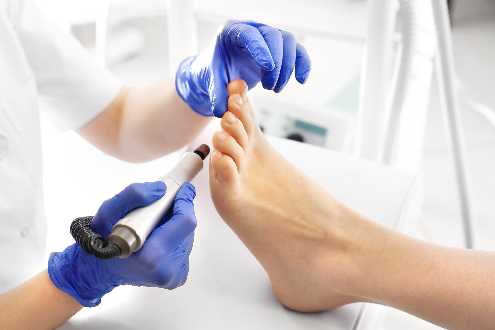

El pie que está creciendo y el pie que ya ha caminado mucho
Los dos extremos de la vida son los momentos en los que el pie más necesita ser vigilado, aunque por motivos opuestos: en la infancia todavía está formándose y admite corrección; en la edad avanzada la piel, las uñas y la circulación cambian, y una molestia pequeña puede convertirse en un problema de movilidad.
En ambos casos el trabajo es el mismo: revisar con calma, tratar sin dolor y anticiparse. Adaptamos la consulta al paciente, con el tiempo y la paciencia que cada edad requiere.
El pie del niño cambia hasta los 12-14 años. Una revisión a tiempo permite corregir con medidas sencillas lo que en el adulto ya solo se puede compensar.
Con los años cuesta llegar al pie y verlo bien. La quiropodia periódica mantiene el pie sano, evita heridas y ayuda a seguir caminando con seguridad.
Se queja de dolor después de jugar, gasta las suelas de forma desigual, camina con los pies hacia dentro o hacia fuera, o hay antecedentes familiares de problemas de pie.
Ya no puede cortarse las uñas, evita caminar por molestias, aparecen durezas nuevas, o hay diabetes o problemas de circulación asociados.
Una revisión anual en el niño en edad de crecimiento; en el pie geriátrico, quiropodia cada cuatro a ocho semanas según el estado de las uñas y de la piel.
Reserva la revisión del pie de tu hijo o de tus padres.
968 23 19 64